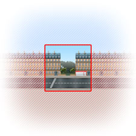

ce navigateur ne prend pas en charge les propriétés css3
WebScale
v0.1
WebScale
est un outils de redimensionnement de la page web en fonction de la zone visible définit.
Il utilise les nouvelles propriétés CSS3
transform
et
transform-origin

voir le projet sur
github